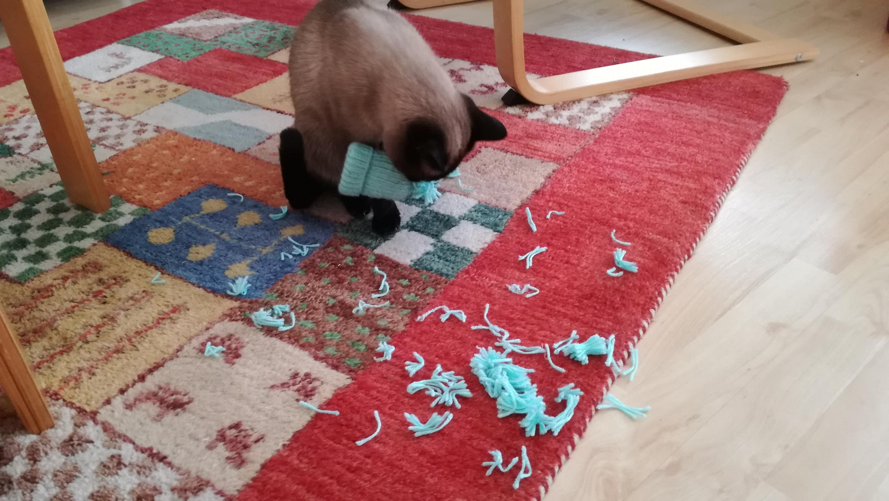

Ich werde doch wohl ein Blaumeischen von einem Eierwärmer unterscheiden können! Wäre ja gelacht.

Ich werde doch wohl ein Blaumeischen von einem Eierwärmer unterscheiden können! Wäre ja gelacht.
Die Blogbeiträge stehen unter einer Creative Commons Namensnennung 4.0 International Lizenz.